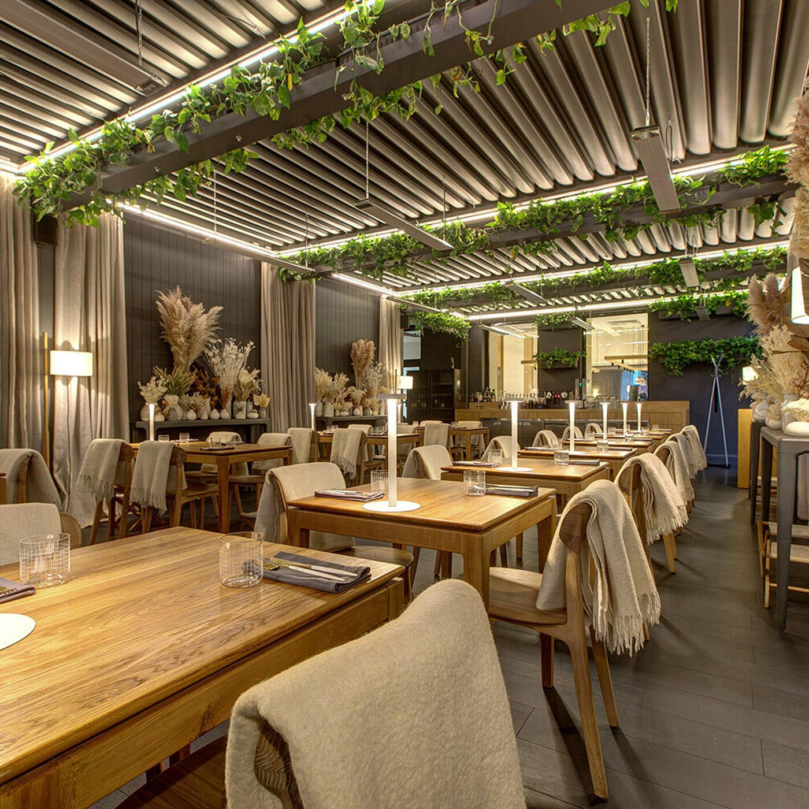
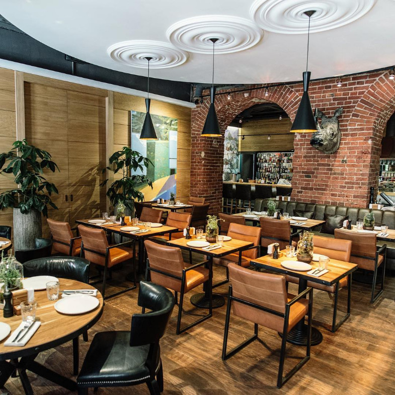
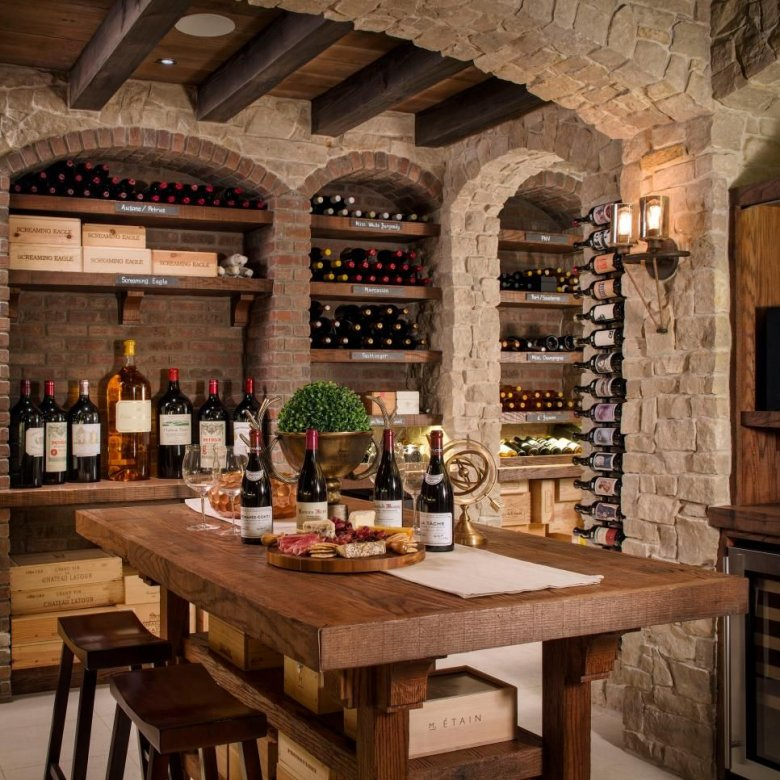
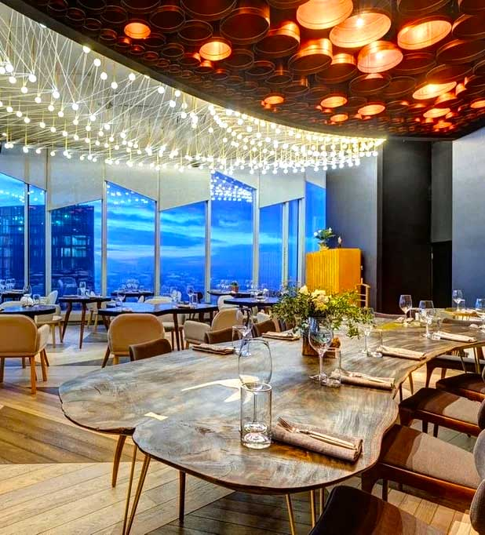
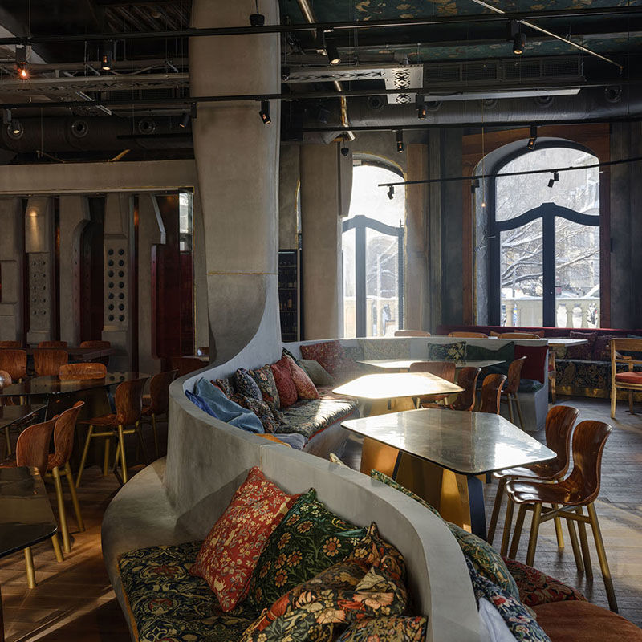
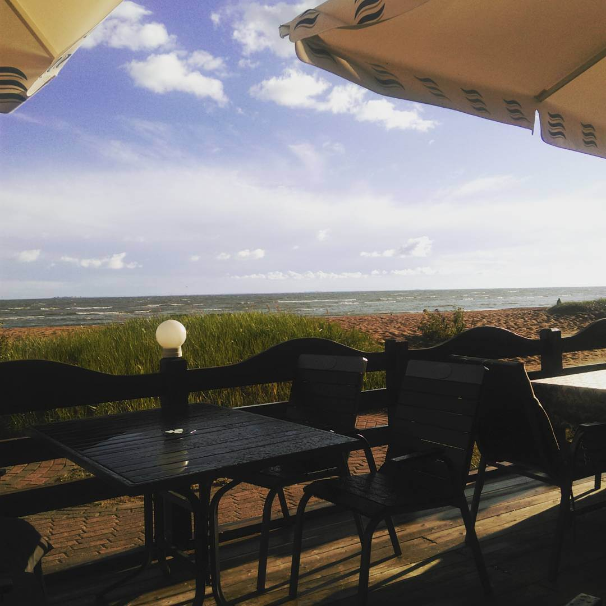
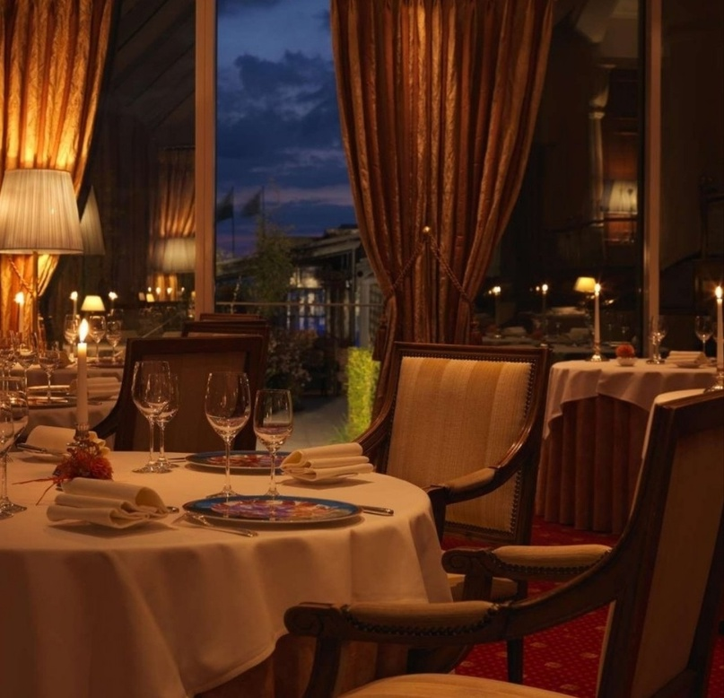

Санкт-Петербург, город с богатой историей и культурой, также известен своими кулинарными традициями. Одним из таких мест, где можно ощутить вкус Балтики, является ресторан "Балтийская Кухня", предлагающий блюда, приготовленные из свежайших морепродуктов, доставленных прямо из холодных вод Балтийского моря.
"Дымный Ларёк" – это уютное заведение, где можно попробовать копчёную рыбу и другие деликатесы. Здесь каждое блюдо рассказывает историю о морских путешествиях и традициях копчения, которые передаются из поколения в поколение.
В "Петербургском Погребке" подают закуски, которые идеально сочетаются с холодным пивом или водкой. Это место славится своими селёдочками под шубой и картофелем с укропом, напоминая о том, что простота иногда – это истинный вкус.
Ресторан "Новая Волна" представляет классические блюда в современной интерпретации. Шеф-повара экспериментируют с текстурами и сочетаниями, создавая новые вкусовые ощущения из знакомых ингредиентов.
"Балтийская Выпечка" – это кондитерская, где можно насладиться разнообразием пирогов, начинённых мясом, рыбой или ягодами. Каждый пирог – это отдельная история, испечённая с любовью и заботой.
Ресторан "Морской Взгляд" предлагает не только изысканные блюда, но и неповторимый вид на залив. Здесь можно насладиться ужином, наблюдая за закатом и кораблями, медленно проплывающими вдоль горизонта.
Петербургская гастрономическая сцена – это мозаика вкусов и ароматов, каждый из которых уникален и неповторим. "Балтийские Блюда" – это не просто еда, это путешествие по истории и культуре, которое каждый гурман должен испытать.
